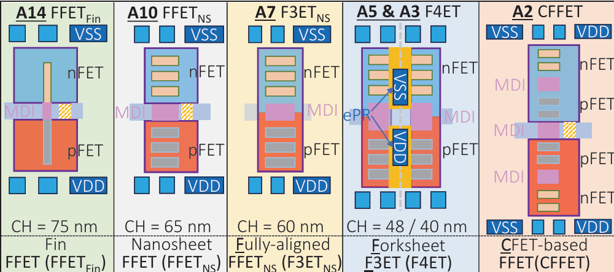
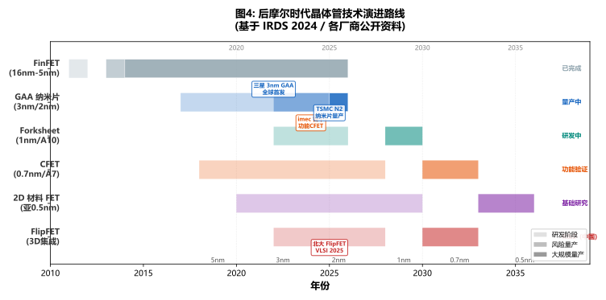
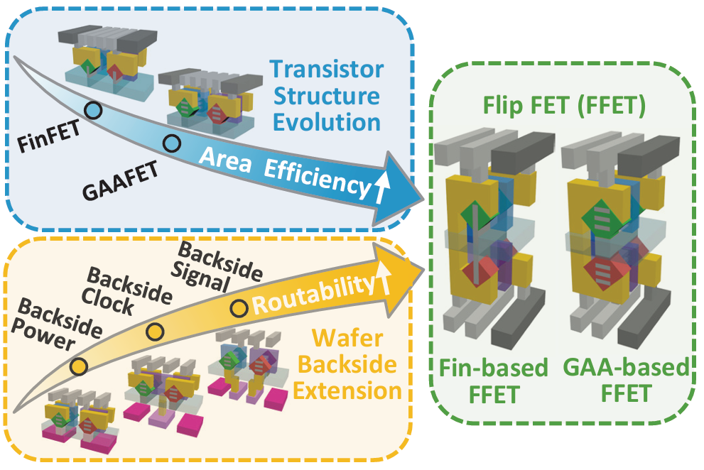
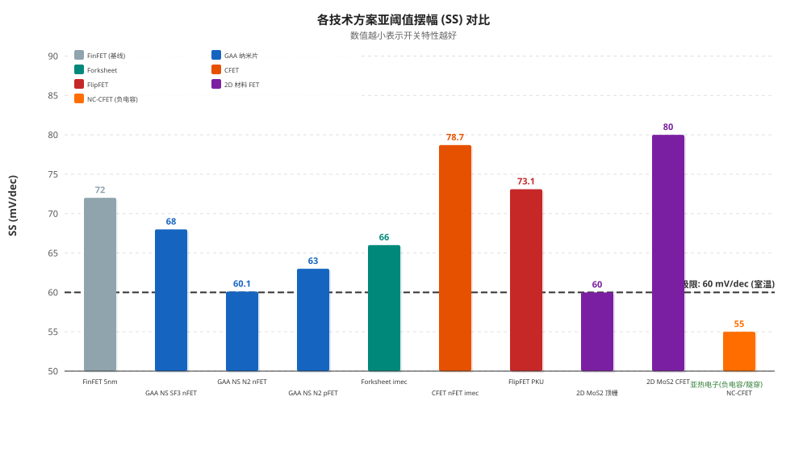
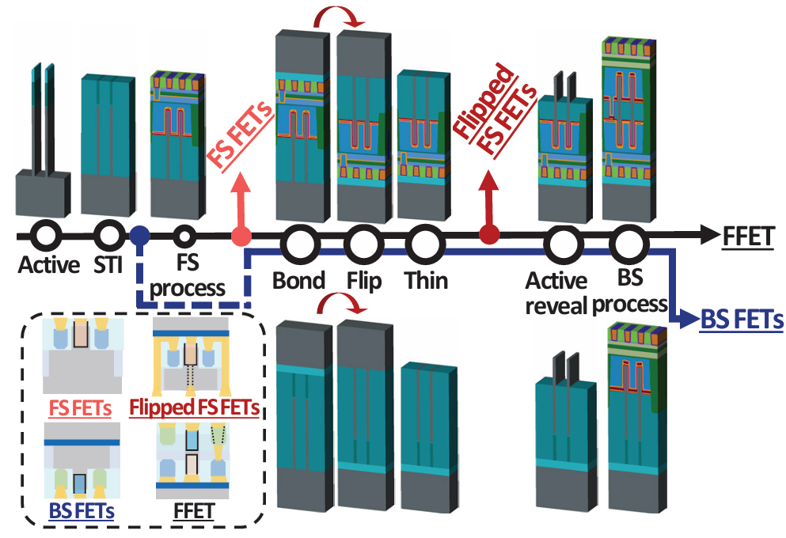
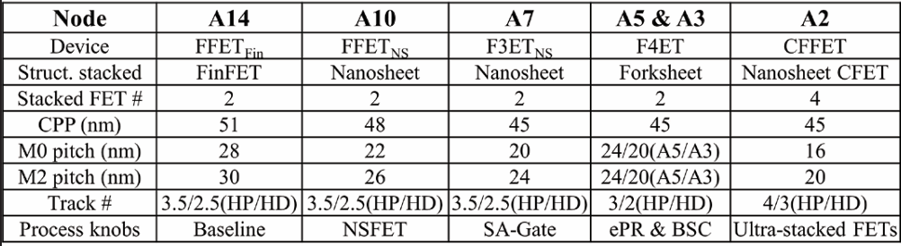

摘要
随着半导体工艺进入 3 nm 及以下技术节点，传统硅基 CMOS 器件正逐步逼近物理缩放极限，摩尔定律的演进路径正在从二维尺寸缩放转向三维集成密度提升。根据 IRDS 2024路线图，未来先进逻辑器件的发展重点将集中于三维堆叠、背面供电以及新型晶体管架构。在这一背景下，全球主要半导体企业与研究机构围绕GAA Nanosheet、CFET、Forksheet 以及FlipFET等方向展开激烈竞争。
本报告在系统梳理国际先进逻辑器件技术路线的基础上，建议将 FlipFET（FFET）三维集成架构作为研发团队重点布局方向。FlipFET 由黄如与吴恒团队提出，并于 VLSI 2024 首次公开、VLSI 2025 完整展示其器件与 PPA 缩放路线。该架构区别于传统 CFET 的"单面垂直堆叠"模式，采用晶圆翻转（flip）、衬底减薄与双面器件制造技术，在同一晶圆前后两侧协同构建 CMOS 器件与互连结构，从而实现面向后摩尔时代的三维 CMOS 集成方案。FFET 架构进一步结合 GAA nanosheet、Forksheet 与 ePR等技术，具备向更高层数三维集成扩展的潜力。
与传统 FinFET 架构相比，FFET 在逻辑密度、互连效率与功耗方面展现出显著优势。其在标准单元、SRAM 与 RISC-V Core 等典型 benchmark 中均获得明显的面积缩减与能效优化；同时，双面工艺结构有效降低了布线拥塞与互连寄生效应。相比 CFET 所需的高深宽比垂直图形化与复杂热预算控制，FFET 通过前后侧工艺解耦，显著提升了工艺可制造性，并能够较好兼容现有 FinFET/GAA 制造基础设施。
同时，FFET 属于中国团队提出的新型三维逻辑器件架构，在先进逻辑器件领域具有重要原创性，对于未来高端芯片产业链中的专利布局与技术自主可控具有重要战略意义。




竞品方案详细分析 (点击展开)
GAA纳米片 — 当前主流方案 (三星/TSMC/Intel量产中)
GAA纳米片的核心特征是垂直堆叠2至多个水平硅纳米片作为沟道，栅极金属从四个方向全包围。TSMC N2 (2025下半年量产) 实现SS 60.1 mV/dec、功耗-35%或性能+15% vs N3；三星3nm MBCFET为业界首款GAA量产。主要局限：n/p横向间距制约标准单元高度进一步缩放(维持5T)，自热效应不可忽略。
| 参数 | 数值 | 来源 |
|---|---|---|
| Lg (栅极长度) | 12~20 nm | TSMC IEDM 2024 |
| EOT | ~0.78 nm | Physica Scripta 2025 |
| SS (最佳) | 60.1 mV/dec | TSMC IEDM 2024 |
| Ion/Ioff | 10⁵~10⁹ | Yeap G et al. 2nm Nanosheet Transistors IEDM 2024(TSMC N2); Rani J et al. MBCFET Physica Scripta 2025(JL优化) |
Forksheet — 改良过渡方案 (仅imec R&D, 无代工厂公开承诺)
imec在VLSI 2025展示了外壁Forksheet方案：在n/p之间插入介质壁，标准单元高度缩至~90nm、SRAM面积-22%。外壁方案支持全沟道应变工程补偿驱动损失，Ω-gate蚀刻后驱动电流+25%。但至今无代工厂公开承诺采用，且Ω-gate仅三面半包围(静电弱于GAA四面全包)。
CFET — 国际主推的终局方案 (imec/TSMC/三星/Intel, 量产预期2030-2035)
CFET将nMOS与pMOS垂直堆叠在同一footprint上，面积可缩减50-55%。imec在VLSI 2024展示了全球首个电学功能验证的单片CFET (Lg=18nm, Gate Pitch=60nm)，2025年CMOS存活率从5%提升至30%。台积电IEDM 2024展示了48nm Gate Pitch全功能CFET反相器。
核心瓶颈：工艺存活率目前仅30%(远低于量产要求的>90%)，IRDS已将其量产预期从2031推迟至2035；自热效应严重(NBTI电压加速因子2.26)；n/p驱动电流失配；MGG导致VTH变异14-16mV。
二维材料FET — 远期储备 (MoS₂/WSe₂, 量产窗口2035+)
2025 IEDM上三星、TSMC、Intel、CEA-Leti、imec、普渡、复旦同时展示2D FET最新进展。复旦实现~6000晶体管MoS₂微处理器；普渡演示Lch=20nm近SCE免疫的MoS₂ FET。但p型接触电阻是最大短板，TMD散热为硅的3倍，大面积均匀性不足。
国际竞争对手战略画像 (点击展开)
TSMC (台积电) — 渐进式GAA + 系统级集成双轮驱动
当前节点：3nm FinFET (N3/N3E) | 2nm目标：N2 GAA纳米片 2025H2量产; A16 Super Power Rail BSPDN 2026H2
核心策略：不在单一技术上冒险——GAA和BSPDN分步部署(N2先GAA、A16再加BSPDN)；同时通过3DFabric封装生态(CoWoS/SoIC/InFO)锁定AI/HPC客户，形成"工艺+封装"捆绑优势。NanoFlex多Vt方案提供6种Vt选择、~200mV覆盖范围，满足从移动端到HPC全频谱需求。
关键风险：High-NA EUV明确不采用(坚持0.33NA至A14节点，2030+才考虑)，长期分辨率竞争力存疑；台湾海峡地缘政治风险；CoWoS产能缺口~15%
| 指标 | N2 (2025H2) | A16 SPR (2026H2) |
|---|---|---|
| 晶体管架构 | GAA纳米片 | GAA纳米片 + BSPDN |
| SRAM密度 | ~38 Mb/mm² | TBD |
| 逻辑密度 | 313 MTr/mm² | TBD |
| SS | 60.1 mV/dec (近理想) | TBD |
| High-NA EUV | 否 (0.33NA) | 否 (0.33NA) |
| 数据来源: N2 SRAM ~38 Mb/mm² — TSMC IEDM 2024; 逻辑密度 313 MTr/mm² — TSMC IEDM 2024; SS 60.1 mV/dec — TSMC IEDM 2024 | ||
Intel (英特尔) — BSPDN + High-NA EUV 双先锋, IDM 2.0 转型中
当前节点：Intel 4/3 | 2nm目标：18A (RibbonFET GAA + PowerVia BSPDN) 2025H2量产; 14A (1.4nm) 2027试产
核心策略：技术激进——全球唯一同时在2nm节点部署GAA+BSPDN的厂商，PowerVia领先TSMC整整一年。High-NA EUV独家布局(2台EXE:5000已安装，EXE:5200B验收中)，为14A节点(2027)储备分辨率优势。IDM 2.0模式向外开放代工产能，争夺AWS/Google等CSP自研ASIC订单。
关键风险：历史执行纪录(10nm/7nm多次跳票)动摇客户信任；SRAM密度(~31.8 Mb/mm²)落后TSMC N2(~38)；代工客户获取尚在早期(Microsoft/Amazon宣布合作但未上量)；IDM重资产模式带来财务压力
| 指标 | 18A (2025H2) | 14A (2027试产) |
|---|---|---|
| 晶体管架构 | RibbonFET GAA + PowerVia BSPDN | RibbonFET + PowerVia + High-NA EUV |
| SRAM密度 | ~31.8 Mb/mm² | TBD |
| 逻辑密度 | 238 MTr/mm² | TBD |
| BSPDN IR Drop | -30% | TBD |
| High-NA EUV | 辅助开发 (0.55NA) | 主力生产 (0.55NA) |
| 数据来源: 18A SRAM ~31.8 Mb/mm² — Intel IEDM 2024; 逻辑密度 238 MTr/mm² — Intel Technology Roadmap 2025; BSPDN IR Drop -30% — Intel IEDM 2024 | ||
Samsung (三星) — GAA先发但良率受挫, 存储协同寻求破局
当前节点：SF3 GAA MBCFET | 2nm目标：SF2 2025-2026; SF2Z BSPDN 2027; SF1.4 2027+
核心策略：全球首款GAA量产(SF3, 2022)占得先发优势，但良率挣扎(Samsung Foundry Forum 2023; ChosunBiz 2023; TrendForce 2024综合报道, 约20-60%)导致Qualcomm/NVIDIA转单TSMC。SF2集成BSPDN以追赶Intel/TSMC。存储-逻辑协同是差异化王牌——HBM+HBM4+Cube封装可与代工业务形成Turnkey方案。特斯拉AI6芯片$16.5B Turnkey订单是代工业务的关键转折点。
关键风险：SF3良率未达客户预期→核心客户流失→产能利用率不足→持续亏损(代工业务2023-2024亏损>$3B)；High-NA EUV部署晚于Intel；在先进封装市场份额<5%、与TSMC的>90%存在数量级差距
| 指标 | SF3 (3nm) | SF2 (2nm) |
|---|---|---|
| 晶体管架构 | GAA MBCFET | GAA MBCFET + BSPDN |
| SRAM密度 | ~28 Mb/mm² (估算) | TBD |
| 逻辑密度 | 231 MTr/mm² | TBD |
| SS | ~68 mV/dec | TBD |
| 良率 | 20-60% (Samsung Foundry Forum 2023; ChosunBiz 2023; TrendForce 2024) | TBD |
| 数据来源: SF3 逻辑密度 231 MTr/mm² — Samsung Foundry Forum 2023; SRAM ~28 Mb/mm² — 基于公开文献估算; SS ~68 mV/dec — Samsung VLSI 2022 | ||
Rapidus (日本) — 政府驱动新进入者, IBM技术背书
当前节点：无 (全新建设) | 2nm目标：IBM 2nm GAA纳米片技术转移, 2027量产; 1.4nm 2029
核心策略：日本政府产业政策驱动(总投入~2.4万亿日元) + IBM 2nm技术授权。差异化定位为"先进逻辑快捷通道"——单晶圆加工模式(非大批量)、低最小订单量、快周转周期，服务小众高价值客户。首客Canon(图像处理芯片)、Tenstorrent(AI处理器)、Fujitsu(AI NPU)。
关键风险：零先进节点量产履历(TSMC/Samsung/Intel均有数十年量产经验)；2027目标比一线厂商晚2-3年；资金规模(年投入数十亿美元)比三大厂商(年投入数百亿美元)低两个数量级；日本半导体人才断层(1990年代后产业萎缩导致工程师断层)
| 指标 | 状态 | 说明 |
|---|---|---|
| IIM-1工厂 | 已激活 | 北海道千岁, EUV已安装, 2nm测试晶圆运行中 |
| 原型验证 | 已完成 | 2025年7月展示2nm功能晶体管, 电学特性达标 |
| PDK发布 | 2026春 | IBM合作, 客户开始设计导入 |
| 首客确认 | Canon (2026.3) | 影像处理芯片, 总研发费~400亿日元 |
| 量产目标 | 2027下半年 | 首个外部客户预计Tenstorrent AI处理器 |
3D先进封装生态系统对比
| 公司 | 平台 | 核心技术 | 最大中介层 | 互连间距 | 关键客户 | 2025-2026关键进展 |
|---|
2nm节点关键差异化能力总览
| 公司/节点 | 晶体管 | BSPDN | High-NA EUV | 3D封装 | SRAM密度 | 量产时间 | 综合风险 |
|---|---|---|---|---|---|---|---|
| TSMC N2 | GAA NS | A16 2026H2 | 拒绝 (至2030+) | CoWoS/SoIC (份额>90%) | ~38 Mb/mm² | H2 2025 | 低 |
| Intel 18A | RibbonFET | PowerVia H2 2025 (领先) | 2台已安装 (领先) | EMIB/Foveros | ~31.8 Mb/mm² | H2 2025 | 中-高 |
| Samsung SF2 | MBCFET | SF2Z 2027 | 2026试产 | I-Cube/X-Cube | ~30 Mb/mm² (估算) | 2025-2026 | 中 |
| Rapidus 2nm | GAA NS (IBM) | 待定 | 待定 | RCS Chiplet | 待定 | 目标 2027 | 高 |
架构原理
FlipFET由北京大学黄如院士-吴恒研究员团队在VLSI 2024首次提出、VLSI 2025公布完整成果。核心思想彻底区别于CFET：CFET在同一晶圆上自下而上堆叠nMOS与pMOS，FlipFET则在两片独立晶圆上分别制造nMOS和pMOS，通过晶圆键合+翻转+背面减薄实现双面集成。
核心流程：(1) 两片晶圆分别独立制造nMOS（正面，FinFET或GAA工艺）和pMOS；(2) 面对面键合（铜焊盘间距1-2μm）；(3) 翻转叠层并减薄背面晶圆；(4) 背面光刻校正实现n/p对准；(5) 背面互连形成。
FlipFET与CFET的扩展逻辑根本不同：CFET理论极限仅2层（n+p），而FlipFET每片晶圆自身支持多层设计（如GAA堆叠纳米片）。在A2节点下，FlipFET已实现Lg=15nm、SS=73.1mV/dec、DIBL=24mV、EOT=0.91nm的器件参数。全流程温度<400°C，兼容铜互连。
三大架构级优势
1. 密度与功耗优势：FFET通过"双面器件 + 多层晶体管堆叠"实现区别于传统二维CMOS的三维集成路径。基于VLSI公开结果表明，FFET已展示基于双面结构的缩放路线，并在标准单元、SRAM与RISC-V Core等benchmark中获得显著PPA优势。相比传统FinFET架构，其逻辑密度具备超过单纯n/p垂直堆叠的扩展潜力，核心原因在于"双面集成 × 多层nanosheet/CFET stack"的乘积效应，而非传统CFET仅依赖单侧n/p堆叠。同时，FFET通过双面routing、ePR、更短互连长度以及前后侧器件独立优化，可有效降低寄生RC、IR drop与互连功耗，在后1nm节点展现出更优的系统级能效潜力。
2. 漏电与器件隔离优势：相比CFET将nFET与pFET堆叠于同一垂直柱体结构、依赖中间MDI进行隔离，FFET通过双面工艺将器件分布于晶圆前后两侧，从结构上增加了n/p器件之间的物理隔离距离。随着技术节点进入亚1nm甚至亚0.7nm区间，器件间寄生漏电与热耦合问题将进一步加剧，而FFET的双面结构在降低器件串扰、提升热管理灵活性方面具有潜在架构优势。这也是FFET区别于传统单片垂直CFET路线的重要特点之一。
3. 工艺兼容性与产业可实现性：FFET的另一核心优势在于其工艺路径相对友好。其前后侧器件均可在现有FinFET或GAA nanosheet工艺基础上实现，新增模块仅3项（晶圆键合+翻转减薄+背面光刻），三项工艺均源自3D NAND和BSI CIS领域已大规模量产的成熟技术，产业化基础扎实。
FlipFET vs CFET 十二维度对比
| 维度 | CFET | FlipFET |
|---|
技术示意图



下一步重点工作
为了推动 FlipFET（FFET）技术方案从"实验室理论验证"向"产业化原理样片"跨越，研发团队下一步将围绕工艺突破、架构协同优化及全链路设计生态三个维度展开布局。
1. 高精度背面套刻（Overlay）与自对准工艺开发：针对晶圆翻转减薄后的形变问题，重点攻关背面光刻校正技术。引入黄如教授文献提出的全自对准F3ET 栅极工艺，确保正面（FS）与背面（BS）栅极及源漏接触的纳米级对准精度。
2. 多层垂直堆叠技术攻关：突破单一晶圆两面各单层器件的限制，探索在晶圆两面分别外延生长多层商用Nanosheet结构，实现 CFFET 架构的集成，以进一步释放 A2 及以下节点的晶格密度潜力。
关键技术难点
| 技术难点 | 描述 | 应对策略 |
|---|---|---|
| 应力释放与晶圆热预算解耦 | 晶圆临时键合、衬底剥离以及背面高温工艺（如激活退火）极易引起晶圆翘曲或使正面已做好的器件退化 | 背面加工时严格控制热预算，保持双面器件性能均衡 |
| 背面互连与高深宽比通孔制造 | 背面 CMOS 器件需要与复杂的背面信号线、电源轨（BPR/ePR）互连，垂直通孔的刻蚀与金属填充工艺窗口极窄，极易引发寄生电阻飙升或良率失效 | 优化通孔刻蚀/填充工艺窗口，降低寄生电阻 |
| 三维散热与热安全控制 | 双面超堆叠结构使热阻大幅增加。高功耗高性能（HP）工作模式下，热量极难通过衬底导出，器件自发热效应（SHE）严重威胁可靠性与寿命 | 热—电耦合建模+优化散热路径 |
进一步提高器件性能的设想
1. 沟道材料创新（引入高迁移率二维材料）：在后 1 nm 阶段，考虑将背面（BS）的硅基沟道替换为低阻抗、高迁移率的二维过渡金属硫族化合物，利用其原子级薄的厚度进一步抑制短沟道效应。
2. 多阈值电压调谐机制调优：利用文献中已验证的 FFET 独立双面工艺优势，精细化设计背面功函数金属（WFM）工程，实现约 500mV 的超宽阈值电压调节窗口，使同一颗芯片能完美兼顾高性能（HP）与超低功耗（LP）场景。
3. 热电协同设计：在进行 DTCO（设计技术协同优化）时，引入背面金刚石或埋入式高导热系数介质（如 AlN）作为散热衬底，从架构源头化解三维集成晶体管的热学瓶颈，将环形振荡器（RO）的频率和芯片整体能效比推向新高。